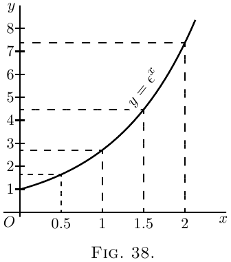

论真正的复利与有机增长法则
设有一个量按这样的方式增长：在给定时间内，
它增长的增量总是与它自身的大小成正比。
这很像按某个固定利率计算金钱利息的过程；
因为本金越大，在给定时间内得到的利息也越大。
现在，在计算时我们必须把两种情形分清楚：
一种是算术书所说的“单利”，另一种是它们所说的“复利”。
前一种情形中，本金保持不变；后一种情形中，
利息加到本金里，于是本金随着一次次加入而增加。
按单利计算。看一个具体例子。
设起初的本金是 £$100$，年利率为 $10$%。那么资本的主人
每年会增加 £$10$。让他每年取出利息，
把它存起来，比如塞进袜子里，或锁进保险柜。
这样如果他坚持 $10$ 年，到那时他会收到 $10$ 笔各 £$10$ 的增量，
也就是 £$100$；加上原来的 £$100$，总共是 £$200$。
他的财产会在 $10$ 年内翻一倍。如果利率是 $5$%，
他就得存 $20$ 年才能让财产翻倍。若利率只有 $2$%，
他就得存 $50$ 年。很容易看出，如果每年的利息值是本金的
$\dfrac{1}{n}$，他就必须继续积攒 $n$ 年，才能让财产翻倍。
或者说，如果 $y$ 是原始本金，每年的利息是 $\dfrac{y}{n}$，
那么 $n$ 年后他的财产就是
\[
y + n\dfrac{y}{n} = 2y.
\]
(2) 按复利计算。 和前面一样，设主人
从 £$100$ 本金开始，年利率为 $10$%；但不把利息存起来，
而是每年把它加到本金上，使本金逐年增长。
于是，一年结束时，本金会增至 £$110$；第二年（仍按 $10$%）
这笔钱会赚得 £$11$ 的利息。第三年开始时他有 £$121$，
这笔钱的利息将是 £$12$.$2$s；所以第四年开始时他有
£$133$.$2$s，如此等等。算一下并不难，十年结束时，
总本金会增至 £$259$.$7$s.$6$d。事实上，我们看到，
每年结束时，每一英镑会赚得 $\tfrac{1}{10}$ 英镑；
因此，如果总是把这部分加上去，每一年都会把本金乘以
$\tfrac{11}{10}$；若连续十年（也就是把这个因子连乘十次），
就会把原始本金乘以 $2.59374$。让我们把它写成符号。
用 $y_0$ 表示原始本金；用 $\dfrac{1}{n}$ 表示在 $n$ 次操作中
每次加入的比例；用 $y_n$ 表示第 $n$ 次操作结束时的本金值。
那么
\[
y_n = y_0\left(1 + \frac{1}{n}\right)^n.
\]
但是这种一年结算一次复利的方式，其实还不太公平；
因为即使在第一年里，那 £$100$ 也应该一直在增长。
半年结束时，它至少应该已有 £$105$，而若下半年利息按
£$105$ 来算，显然会更公平。这就等价于每半年按 $5$% 计息；
于是共有 $20$ 次操作，每一次都把本金乘以 $\tfrac{21}{20}$。
按这种方式计算，十年结束时本金会增至
£$265$.$6$s.$7$d；因为
\[
(1 + \tfrac{1}{20})^{20} = 2.653.
\]
可是，即便如此，这个过程仍然不够公平；因为到第一个月末，
已经会有一些利息产生；而半年一结算的办法等于假定本金
一次静止六个月。假设我们把一年分成 $10$ 份，
每十分之一年按百分之一计息。这样十年里共有 $100$ 次操作；也就是
\[
y_n = £100 \left( 1 + \tfrac{1}{100} \right)^{100};
\]
算出来是
£$270$.$9$s.$7\frac{1}{2}$d。
这还不是终点。把十年分成 $1000$ 个时期，
每个时期是 $\frac{1}{100}$ 年；每个这样的时期利息为 $\frac{1}{10}$%；
那么
\[
y_n = £100 \left( 1 + \tfrac{1}{1000} \right)^{1000};
\]
算出来是
£$271$.$13$s.$10$d。
再分得更细些，把十年分成 $10,000$ 份，
每份是 $\frac{1}{1000}$ 年，利息为 $1$% 的 $\frac{1}{100}$。于是
\[
y_n = £100 \left( 1 + \tfrac{1}{10,000} \right)^{10,000}
\]
其数额为
£$271$.$16$s.$3\frac{1}{2}$d。
最后可以看出，我们真正要找的，其实是表达式
$\left(1 + \dfrac{1}{n}\right)^n$ 的最终值。我们已经看到它大于 $2$；
并且随着 $n$ 取得越来越大，它越来越接近某个特定的极限值。
不论你把 $n$ 取得多大，这个表达式的值都会越来越接近这个数：
\[
2.71828\ldots
\]
一个永远不该忘记的数。
我们用几何图形来说明这些事。在 图 36 中，
$OP$ 表示原始值。$OT$ 是这个值增长所经过的全部时间。
它被分成 $10$ 个时期，每个时期都有相等的一步上升。
这里 $\dfrac{dy}{dx}$ 是常数；如果每一步上升都是原来 $OP$ 的
$\frac{1}{10}$，那么经过 $10$ 个这样的步骤，高度就翻倍了。
如果我们取 $20$ 个步骤，每一步只有图中所示高度的一半，
最后高度仍然刚好翻倍。或者说，$n$ 个这样的步骤，
每步为原始高度 $OP$ 的 $\dfrac{1}{n}$，也足以让高度翻倍。
这就是单利的情形：$1$ 一直增长到 $2$。

在 图 37 中，我们有几何级数的相应图示。
每一个后继纵坐标都应当是前一个的 $1 + \dfrac{1}{n}$ 倍，
也就是 $\dfrac{n+1}{n}$ 倍。上升的各步并不相等，因为现在
每一步上升都是曲线该处纵坐标的 $\dfrac{1}{n}$。
如果我们真的只取 $10$ 步，并以 $\left(1 + \frac{1}{10} \right)$
作为乘数因子，最终总量会是原来 $1$ 的
$(1 + \tfrac{1}{10})^{10}$ 倍，也就是 $2.594$ 倍。
但只要我们把 $n$ 取得足够大（相应地 $\dfrac{1}{n}$ 足够小），
那么单位 $1$ 所增长到的最终值 $\left(1 + \dfrac{1}{n}\right)^n$
就是 $2.71828$。

Epsilon。 对这个神秘的数 $2.7182818$ 等等，
数学家指定了一个符号：希腊字母 $\epsilon$（读作 epsilon）。
所有学生都知道希腊字母 $\pi$（读作 pi）表示 $3.141592$ 等等；
但他们中有多少人知道 epsilon 表示 $2.71828$ 呢？
可是它甚至比 $\pi$ 更重要！
那么，epsilon 到底是什么？
假设我们让 $1$ 按单利增长，直到它变成 $2$；
那么，在相同的名义利率、相同的时间内，
如果我们让 $1$ 按真正的复利而不是单利增长，
它就会增长到 epsilon 这个值。
这种在每一个瞬间都按当时大小成比例增长的过程，
有些人称为按对数率增长。单位对数增长率，
就是在单位时间内使 $1$ 增长到 $2.718281$ 的那种增长率。
它也可以叫作有机增长率：因为有机增长（在某些情形下）
的特征正是，在给定时间内，有机体的增量与有机体自身的大小成正比。
如果我们把 $100$% 当作单位率，把任意固定时期当作单位时间，
那么让 $1$ 以单位率、经过单位时间作算术式增长的结果是 $2$；
而让 $1$ 在同样时间内以单位率作对数式增长的结果，
则是 $2.71828\ldots$。
再多说一点 Epsilon。 我们已经看到，
我们需要知道当 $n$ 变得无限大时，表达式
$\left(1 + \dfrac{1}{n}\right)^n$ 会达到什么值。
从算术上说，下面列出了一批数值（任何人都可以借助普通对数表算出来），
它们分别取 $n = 2$、$n = 5$、$n = 10$，依次直到 $n = 10,000$。
\begin{alignat*}{2}
&(1 + \tfrac{1}{2})^2 &&= 2.25. \\
&(1 + \tfrac{1}{5})^5 &&= 2.488. \\
&(1 + \tfrac{1}{10})^{10} &&= 2.594. \\
&(1 + \tfrac{1}{20})^{20} &&= 2.653. \\
&(1 + \tfrac{1}{100})^{100} &&= 2.705. \\
&(1 + \tfrac{1}{1000})^{1000} &&= 2.7169. \\
&(1 + \tfrac{1}{10,000})^{10,000} &&= 2.7181.
\end{alignat*}
不过，值得再找一种办法来计算这个极其重要的数。
因此，我们来借助二项式定理，
用那套熟知的方法展开表达式 $\left(1 + \dfrac{1}{n}\right)^n$。
二项式定理给出的规则是
\begin{align*}
(a + b)^n &= a^n + n \dfrac{a^{n-1} b}{1!} + n(n - 1) \dfrac{a^{n-2} b^2}{2!} \\
& \phantom{= a^n\ } + n(n -1)(n - 2) \dfrac{a^{n-3} b^3}{3!} + \text{等等}. \\
\end{align*}
令 $a = 1$ 且 $b = \dfrac{1}{n}$，得到
\begin{align*}
\left(1 + \dfrac{1}{n}\right)^n
&= 1 + 1 + \dfrac{1}{2!} \left(\dfrac{n - 1}{n}\right) + \dfrac{1}{3!} \dfrac{(n - 1)(n - 2)}{n^2} \\
&\phantom{= 1 + 1\ } + \dfrac{1}{4!} \dfrac{(n - 1)(n - 2)(n - 3)}{n^3} + \text{等等}.
\end{align*}
现在，如果我们假设 $n$ 变得无限大，
比如十亿，或者十亿个十亿，那么 $n - 1$、$n - 2$
以及 $n - 3$ 等等，在实际感觉上都等于 $n$；
于是级数变为
\[
\epsilon = 1 + 1 + \dfrac{1}{2!} + \dfrac{1}{3!} + \dfrac{1}{4!} + \text{等等}\ldots
\]
把这个迅速收敛的级数取到任意多项，
我们就能把和算到任意想要的精度。下面是取十项的计算：
| | $1.000000$ |
| 除以 1 | $1.000000$ |
| 除以 2 | $0.500000$ |
| 除以 3 | $0.166667$ |
| 除以 4 | $0.041667$ |
| 除以 5 | $0.008333$ |
| 除以 6 | $0.001389$ |
| 除以 7 | $0.000198$ |
| 除以 8 | $0.000025$ |
| 除以 9 | $0.000002$ |
| 总计 | $2.718281$ |
$\epsilon$ 与 $1$ 不可公度，而且像 $\pi$ 一样，
是一个无穷不循环小数。
指数级数。 我们还需要另一个级数。
让我们再次利用二项式定理，展开表达式
$\left(1 + \dfrac{1}{n}\right)^{nx}$；当我们使 $n$ 无限大时，
它就等于 $\epsilon^x$。
\begin{align*}
\epsilon^x
&= 1^{nx} + nx \frac{1^{nx-1} \left(\dfrac{1}{n}\right)}{1!}
+ nx(nx - 1) \frac{1^{nx - 2} \left(\dfrac{1}{n}\right)^2}{2!} \\
& \phantom{= 1^{nx}\ }
+ nx(nx - 1)(nx - 2) \frac{1^{nx-3} \left(\dfrac{1}{n}\right)^3}{3!}
+ \text{等等}.\\
&= 1 + x + \frac{1}{2!} · \frac{n^2x^2 - nx}{n^2}
+ \frac{1}{3!} · \frac{n^3x^3 - 3n^2x^2 + 2nx}{n^3} + \text{等等}. \\
&= 1 + x + \frac{x^2 -\dfrac{x}{n}}{2!}
+ \frac{x^3 - \dfrac{3x^2}{n} + \dfrac{2x}{n^2}}{3!} + \text{等等}.
\end{align*}
但是，当 $n$ 变得无限大时，它就化简为下面这样：
\[
\epsilon^x
= 1 + x + \frac{x^2}{2!} + \frac{x^3}{3!} + \frac{x^4}{4!} + \text{等等}\dots
\]
这个级数叫作指数级数。
$\epsilon$ 之所以被看得如此重要，主要原因是 $\epsilon^x$
有一个其他任何 $x$ 的函数都没有的性质：
你对它求导时，它的值保持不变；
换句话说，它的导数就是它自己。只要对它关于 $x$ 求导，
立刻就能看出来，如下：
\begin{align*}
\frac{d(\epsilon^x)}{dx}
&= 0 + 1 + \frac{2x}{1 · 2} + \frac{3x^2}{1 · 2 · 3} + \frac{4x^3}{1 · 2 · 3 · 4} \\
&\phantom{= 0 + 1 + \frac{2x}{1 · 2} + \frac{3x^2}{1 · 2 · 3}\ } + \frac{5x^4}{1 · 2 · 3 · 4 · 5} + \text{等等}. \\
\text{或}\quad
&= 1 + x + \frac{x^2}{1 · 2} + \frac{x^3}{1 · 2 · 3} + \frac{x^4}{1 · 2 · 3 · 4} + \text{等等}.,
\end{align*}
这与原来的级数完全相同。
现在我们也可以反过来做，说：来吧，找一个 $x$ 的函数，
使它的导数等于它自己。或者说，有没有只含 $x$ 的幂的表达式，
在求导后保持不变？于是，让我们假设一个一般表达式为
\begin{align*}
y &= A + Bx + Cx^2 + Dx^3 + Ex^4 + \text{等等},\\
\end{align*}
（其中系数 $A$、$B$、$C$ 等等还要确定），然后对它求导。
\begin{align*}
\dfrac{dy}{dx} &= B + 2Cx + 3Dx^2 + 4Ex^3 + \text{等等}.
\end{align*}
现在，如果这个新表达式真的要和推出它的原表达式相同，
那就很明显，$A$ 必须 $=B$；
$C=\dfrac{B}{2}=\dfrac{A}{1· 2}$；
$D = \dfrac{C}{3} = \dfrac{A}{1 · 2 · 3}$；
$E = \dfrac{D}{4} = \dfrac{A}{1 · 2 · 3 · 4}$，等等。
因此，变化规律就是
\[
y = A\left(1 + \dfrac{x}{1} + \dfrac{x^2}{1 · 2} + \dfrac{x^3}{1 · 2 · 3} + \dfrac{x^4}{1 · 2 · 3 · 4} + \text{等等}\right).
\]
现在，为了进一步简单起见，如果取 $A = 1$，我们有
\[
y = 1 + \dfrac{x}{1} + \dfrac{x^2}{1 · 2} + \dfrac{x^3}{1 · 2 · 3} + \dfrac{x^4}{1 · 2 · 3 · 4} + \text{等等}.
\]
不论把它求导多少次，都会再次得到同一个级数。
现在，如果取 $A=1$ 这个特殊情形，并计算这个级数，
我们就会简单地得到
\begin{align*}
\text{当 } x &= 1,\quad & y &= 2.718281 \text{ 等等}; & \text{也就是 } y &= \epsilon; \\
\text{当 } x &= 2,\quad & y &=(2.718281 \text{ 等等})^2; & \text{也就是 } y &= \epsilon^2; \\
\text{当 } x &= 3,\quad & y &=(2.718281 \text{ 等等})^3; & \text{也就是 } y &= \epsilon^3;
\end{align*}
因此
\[
\text{当 } x=x,\quad y=(2.718281 \text{ 等等})^x;\quad\text{也就是 } y=\epsilon^x,
\]
这样终于证明了
\[
\epsilon^x = 1 + \dfrac{x}{1} + \dfrac{x^2}{1·2} + \dfrac{x^3}{1· 2· 3} + \dfrac{x^4}{1· 2· 3· 4} + \text{等等}.
\]
[注——怎样读指数式。为了方便手边没有老师的人，
这里说一下：$\epsilon^x$ 读作“epsilon 的 x 次方”；
也有人读作“指数 x”。所以 $\epsilon^{pt}$ 读作
“epsilon 的 pt 次方”，或“指数 pt”。再看几个类似的表达式：
$\epsilon^{-2}$ 读作“epsilon 的负二次方”，或“指数负二”。
$\epsilon^{-ax}$ 读作“epsilon 的负 ax 次方”，或“指数负 ax”。]
当然，由此可知，如果对 $\epsilon^y$ 关于 $y$ 求导，它仍保持不变。
而 $\epsilon^{ax}$ 等于 $(\epsilon^a)^x$，对 $x$ 求导时会得到
$a\epsilon^{ax}$，因为 $a$ 是常数。
自然对数或纳皮尔对数。
$\epsilon$ 重要的另一个原因是，对数的发明者 Napier
把它作为自己体系的底数。如果 $y$ 是 $\epsilon^x$ 的值，
那么 $x$ 就是以 $\epsilon$ 为底的 $y$ 的对数。或者说，如果
\begin{align*}
y &= \epsilon^x, \\
\text{则}\; x &= \log_\epsilon y.
\end{align*}
图 38 和 图 39
中画出的两条曲线表示这些方程。
计算得到的点如下：
对于图 38：
| $x$ | $0$ | $0.5$ | $1$ | $1.5$ | $2$ |
| $y$ | $1$ | $1.65$ | $2.71$ | $4.50$ | $7.39$ |

对于图 39：
| $y$ | $1$ | $2$ | $3$ | $4$ | $8$ |
| $x$ | $0$ | $0.69$ | $1.10$ | $1.39$ | $2.08$ |

可以看出，虽然计算给出了不同的描点，
结果却是同一条曲线。这两个方程实际表示的是同一件事。
许多使用普通对数的人，只熟悉以 $10$ 为底而不是以 $\epsilon$ 为底的对数，
不熟悉“自然”对数；所以值得对它们说几句话。
通常那条“对数相加等于乘积的对数”的规则依然成立；即
\[
\log_\epsilon a + \log_\epsilon b = \log_\epsilon ab.
\]
幂的规则也依然成立：
\[
n × \log_\epsilon a = \log_\epsilon a^n.
\]
但是因为 $10$ 不再是底数，不能仅仅给指标加上 $2$ 或 $3$
就表示乘以 $100$ 或 $1000$。要把自然对数变成普通对数，
只要把它乘以 $0.4343$；也就是
\begin{align*}
\log_{10} x &= 0.4343 × \log_{\epsilon} x, \\
\text{反过来，}\;
\log_{\epsilon} x &= 2.3026 × \log_{10} x.
\end{align*}
一张有用的“纳皮尔对数”表
（也叫自然对数或双曲对数）
| 数 |
$\log_{\epsilon}$ |
|
数 |
$\log_{\epsilon}$ |
| $1 $ | $0.0000$ | | $6$ | $1.7918$ |
| $1.1$ | $0.0953$ | | $7$ | $1.9459$ |
| $1.2$ | $0.1823$ | | $8$ | $2.0794$ |
| $1.5$ | $0.4055$ | | $9$ | $2.1972$ |
| $1.7$ | $0.5306$ | | $10$ | $2.3026$ |
| $2.0$ | $0.6931$ | | $20$ | $2.9957$ |
| $2.2$ | $0.7885$ | | $50$ | $3.9120$ |
| $2.5$ | $0.9163$ | | $100$ | $4.6052$ |
| $2.7$ | $0.9933$ | | $200$ | $5.2983$ |
| $2.8$ | $1.0296$ | | $500$ | $6.2146$ |
| $3.0$ | $1.0986$ | | $1000$ | $6.9078$ |
| $3.5$ | $1.2528$ | | $2000$ | $7.6009$ |
| $4.0$ | $1.3863$ | | $5000$ | $8.5172$ |
| $4.5$ | $1.5041$ | | $10 000$ | $9.2103$ |
| $5.0$ | $1.6094$ | | $20 000$ | $9.9035$ |
指数方程与对数方程。
现在让我们试着对一些含有对数或指数的表达式求导。
取这个方程：
\[
y = \log_\epsilon x.
\]
先把它变成
\[
\epsilon^y = x,
\]
于是，由于 $\epsilon^y$ 关于 $y$ 的微分就是保持不变的原函数
（见这里），
\[
\frac{dx}{dy} = \epsilon^y,
\]
再从反函数回到原函数，
\[
\frac{dy}{dx}
= \frac{1}{\ \dfrac{dx}{dy}\ }
= \frac{1}{\epsilon^y}
= \frac{1}{x}.
\]
这真是一个很有意思的结果。可以写作
\[
\frac{d(\log_\epsilon x)}{dx} = x^{-1}.
\]
注意，$x^{-1}$ 这个结果是我们绝不可能用幂函数求导规则得到的。
那条规则是乘以指数，并把指数减去 $1$。
因此，对 $x^3$ 求导得到 $3x^2$；对 $x^2$ 求导得到 $2x^1$。
但对 $x^0$ 求导并不会给出 $x^{-1}$ 或 $0 × x^{-1}$，
因为 $x^0$ 本身 $= 1$，是一个常数。等到讲积分那一章时，
我们还得回到这个奇妙的事实：对 $\log_\epsilon x$ 求导会得到
$\dfrac{1}{x}$。
现在，试着对下面这个式子求导：
\begin{align*}
y &= \log_\epsilon(x+a),\\
\text{即}\; \epsilon^y &= x+a;
\end{align*}
我们有 $\dfrac{d(x+a)}{dy} = \epsilon^y$，因为 $\epsilon^y$ 的微分仍然是 $\epsilon^y$。
这给出
\begin{align*}
\frac{dx}{dy} &= \epsilon^y = x+a; \\
\end{align*}
因此，回到原函数，得到
\begin{align*}
\frac{dy}{dx} &= \frac{1}{\;\dfrac{dx}{dy}\;} = \frac{1}{x+a}.
\end{align*}
接着试试
\begin{align*}
y &= \log_{10} x.
\end{align*}
先乘以模数 $0.4343$，把它变成自然对数。这给出
\begin{align*}
y &= 0.4343 \log_\epsilon x; \\
\text{由此}\;
\frac{dy}{dx} &= \frac{0.4343}{x}.
\end{align*}
下一个就没这么简单了。试试这个：
\[
y = a^x.
\]
两边取对数，得到
\begin{align*}
\log_\epsilon y &= x \log_\epsilon a, \\
\text{即}\;
x = \frac{\log_\epsilon y}{\log_\epsilon a}
&= \frac{1}{\log_\epsilon a} × \log_\epsilon y.
\end{align*}
由于 $\dfrac{1}{\log_\epsilon a}$ 是常数，我们得到
\[
\frac{dx}{dy}
= \frac{1}{\log_\epsilon a} × \frac{1}{y}
= \frac{1}{a^x × \log_\epsilon a};
\]
因此，回到原函数。
\[
\frac{dy}{dx} = \frac{1}{\;\dfrac{dx}{dy}\;} = a^x × \log_\epsilon a.
\]
我们看到，由于
\[
\frac{dx}{dy} × \frac{dy}{dx} =1\quad\text{且}\quad
\frac{dx}{dy} = \frac{1}{y} × \frac{1}{\log_\epsilon a},\quad
\frac{1}{y} × \frac{dy}{dx} = \log_\epsilon a.
\]
我们会发现，只要遇到形如 $\log_\epsilon y =$ 某个 $x$ 的函数
这样的表达式，就总有
$\dfrac{1}{y}\, \dfrac{dy}{dx} =$ 那个 $x$ 的函数的导数。
所以从
$\log_\epsilon y = x \log_\epsilon a$,
\[
\frac{1}{y}\, \frac{dy}{dx}
= \log_\epsilon a\quad\text{且}\quad
\frac{dy}{dx} = a^x \log_\epsilon a.
\]
现在让我们再试几个例子。
例子
(1) $y=\epsilon^{-ax}$。令 $-ax=z$；则 $y=\epsilon^z$。
\[
\frac{dy}{dz} = \epsilon^z;\quad
\frac{dz}{dx} = -a;\quad\text{因此}\quad
\frac{dy}{dx} = -a\epsilon^{-ax}.
\]
或者这样：
\[
\log_\epsilon y = -ax;\quad
\frac{1}{y}\, \frac{dy}{dx} = -a;\quad
\frac{dy}{dx} = -ay = -a\epsilon^{-ax}.
\]
(2) $y=\epsilon^{\frac{x^2}{3}}$。令 $\dfrac{x^2}{3}=z$；则 $y=\epsilon^z$。
\[
\frac{dy}{dz} = \epsilon^z;\quad
\frac{dz}{dx} = \frac{2x}{3};\quad
\frac{dy}{dx} = \frac{2x}{3}\, \epsilon^{\frac{x^2}{3}}.
\]
或者这样：
\[
\log_\epsilon y = \frac{x^2}{3};\quad
\frac{1}{y}\, \frac{dy}{dx} = \frac{2x}{3};\quad
\frac{dy}{dx} = \frac{2x}{3}\, \epsilon^{\frac{x^2}{3}}.
\]
(3) $y = \epsilon^{\frac{2x}{x+1}}$.
\begin{align*}
\log_\epsilon y &= \frac{2x}{x+1},\quad
\frac{1}{y}\, \frac{dy}{dx} = \frac{2(x+1)-2x}{(x+1)^2}; \\
\text{因此}\quad
\frac{dy}{dx} &= \frac{2}{(x+1)^2} \epsilon^{\frac{2x}{x+1}}.
\end{align*}
可令 $\dfrac{2x}{x+1}=z$ 来检验。
(4) $y=\epsilon^{\sqrt{x^2+a}}$. $\log_\epsilon y=(x^2+a)^{\frac{1}{2}}$.
\[
\frac{1}{y}\, \frac{dy}{dx} = \frac{x}{(x^2+a)^{\frac{1}{2}}}\quad\text{且}\quad
\frac{dy}{dx} = \frac{x × \epsilon^{\sqrt{x^2+a}}}{(x^2+a)^{\frac{1}{2}}}.
\]
因为如果 $(x^2+a)^{\frac{1}{2}}=u$ 且 $x^2+a=v$，则 $u=v^{\frac{1}{2}}$，
\[
\frac{du}{dv} = \frac{1}{{2v}^{\frac{1}{2}}};\quad
\frac{dv}{dx} = 2x;\quad
\frac{du}{dx} = \frac{x}{(x^2+a)^{\frac{1}{2}}}.
\]
可令 $\sqrt{x^2+a}=z$ 来检验。
(5) $y=\log(a+x^3)$。令 $(a+x^3)=z$；则 $y=\log_\epsilon z$。
\[
\frac{dy}{dz} = \frac{1}{z};\quad
\frac{dz}{dx} = 3x^2;\quad\text{因此}\quad
\frac{dy}{dx} = \frac{3x^2}{a+x^3}.
\]
(6) $y=\log_\epsilon\{{3x^2+\sqrt{a+x^2}}\}$。令 $3x^2 + \sqrt{a+x^2}=z$；
则 $y=\log_\epsilon z$。
\begin{align*}
\frac{dy}{dz}
&= \frac{1}{z};\quad \frac{dz}{dx} = 6x + \frac{x}{\sqrt{x^2+a}}; \\
\frac{dy}{dx}
&= \frac{6x + \dfrac{x}{\sqrt{x^2+a}}}{3x^2 + \sqrt{a+x^2}}
= \frac{x(1 + 6\sqrt{x^2+a})}{(3x^2 + \sqrt{x^2+a}) \sqrt{x^2+a}}.
\end{align*}
(7) $y=(x+3)^2 \sqrt{x-2}$.
\begin{align*}
\log_\epsilon y
&= 2 \log_\epsilon(x+3)+ \tfrac{1}{2} \log_\epsilon(x-2). \\
\frac{1}{y}\, \frac{dy}{dx}
&= \frac{2}{(x+3)} + \frac{1}{2(x-2)}; \\
\frac{dy}{dx}
&= (x+3)^2 \sqrt{x-2} \left\{\frac{2}{x+3} + \frac{1}{2(x-2)}\right\}.
\end{align*}
(8) $y=(x^2+3)^3(x^3-2)^{\frac{2}{3}}$.
\begin{align*}
\log_\epsilon y
&= 3 \log_\epsilon(x^2+3) + \tfrac{2}{3} \log_\epsilon(x^3-2); \\
\frac{1}{y}\, \frac{dy}{dx}
&= 3 \frac{2x}{(x^2+3)} + \frac{2}{3} \frac{3x^2}{x^3-2}
= \frac{6x}{x^2+3} + \frac{2x^2}{x^3-2}.
\end{align*}
因为如果 $y=\log_\epsilon(x^2+3)$，令 $x^2+3=z$ 且 $u=\log_\epsilon z$。
\[
\frac{du}{dz} = \frac{1}{z};\quad
\frac{dz}{dx} = 2x;\quad
\frac{du}{dx} = \frac{2x}{x^2+3}.
\]
同样，如果 $v=\log_\epsilon(x^3-2)$，则 $\dfrac{dv}{dx} = \dfrac{3x^2}{x^3-2}$，并且
\[
\frac{dy}{dx}
= (x^2+3)^3(x^3-2)^{\frac{2}{3}}
\left\{ \frac{6x}{x^2+3} + \frac{2x^2}{x^3-2} \right\}.
\]
(9) $y=\dfrac{\sqrt[2]{x^2+a}}{\sqrt[3]{x^3-a}}$.
\begin{align*}
\log_\epsilon y
&= \frac{1}{2} \log_\epsilon(x^2+a) - \frac{1}{3} \log_\epsilon(x^3-a). \\
\frac{1}{y}\, \frac{dy}{dx}
&= \frac{1}{2}\, \frac{2x}{x^2+a} - \frac{1}{3}\, \frac{3x^2}{x^3-a}
= \frac{x}{x^2+a} - \frac{x^2}{x^3-a} \\
\text{且}\quad
\frac{dy}{dx}
&= \frac{\sqrt[2]{x^2+a}}{\sqrt[3]{x^3-a}}
\left\{ \frac{x}{x^2+a} - \frac{x^2}{x^3-a} \right\}.
\end{align*}
(10) $y=\dfrac{1}{\log_\epsilon x}$
\[
\frac{dy}{dx}
= \frac{\log_\epsilon x × 0 - 1 × \dfrac{1}{x}}
{\log_\epsilon^2 x}
= -\frac{1}{x \log_\epsilon^2x}.
\]
(11) $y=\sqrt[3]{\log_\epsilon x} = (\log_\epsilon x)^{\frac{1}{3}}$。令 $z=\log_\epsilon x$；$y=z^{\frac{1}{3}}$。
\[
\frac{dy}{dz} = \frac{1}{3} z^{-\frac{2}{3}};\quad
\frac{dz}{dx} = \frac{1}{x};\quad
\frac{dy}{dx} = \frac{1}{3x \sqrt[3]{\log_\epsilon^2 x}}.
\]
(12) $y=\left(\dfrac{1}{a^x}\right)^{ax}$.
\begin{align*}
\log y &= -ax \log a^{x} = -ax^{2} \cdot \log a.\\
\frac{1}{y} \frac{dy}{dx} &= -2ax \cdot \log a\\
\frac{dy}{dx} &= -2ax\left(\frac{1}{a^{x}}\right)^{ax} \cdot \log a = -2x a^{1-ax^{2}} \cdot \log a.
\end{align*}
现在试做下面的习题。
习题 XII
(1) 对 $y=b(\epsilon^{ax} -\epsilon^{-ax})$ 求导。
(2) 求表达式 $u=at^2+2\log_\epsilon t$ 关于 $t$ 的导数。
(3) 若 $y=n^t$，求 $\dfrac{d(\log_\epsilon y)}{dt}$。
(4) 证明若 $y=\dfrac{1}{b}·\dfrac{a^{bx}}{\log_\epsilon a}$， 则 $\dfrac{dy}{dx}=a^{bx}$。
(5) 若 $w=pv^n$，求 $\dfrac{dw}{dv}$。
对下列各式求导：
(6) $y=\log_\epsilon x^n$.
(7) $y=3\epsilon^{-\frac{x}{x-1}}$.
(8) $y=(3x^2+1)\epsilon^{-5x}$.
(9) $y=\log_\epsilon(x^a+a)$.
(10) $y=(3x^2-1)(\sqrt{x}+1)$.
(11) $y=\dfrac{\log_\epsilon(x+3)}{x+3}$.
(12) $y=a^x × x^a$.
(13) Kelvin 勋爵证明，海底电缆的信号传输速度取决于
芯线外径与包在其中的铜线直径之比的数值。
如果把这个比值叫作 $y$，那么每分钟可发送的信号数 $s$
可用下面的公式表示：
\[
s=ay^2 \log_\epsilon \frac{1}{y};
\]
其中 $a$ 是一个常数，取决于长度和材料质量。
证明在这些给定时，若 $y=1 ÷ \sqrt{\epsilon}$，则 $s$ 取得极大值。
(14) 求下面函数的极大值或极小值：
\[
y=x^3-\log_\epsilon x.
\]
(15) 对 $y=\log_\epsilon(ax\epsilon^x)$ 求导。
(16) 对 $y=(\log_\epsilon ax)^3$ 求导。
答案
(1) $ab(\epsilon^{ax} + \epsilon^{-ax})$.
(2) $2at + \dfrac{2}{t}$.
(3) $\log_\epsilon n$.
(5) $npv^{n-1}$.
(6) $\dfrac{n}{x}$.
(7) $\dfrac{3\epsilon^{- \frac{x}{x-1}}}{(x - 1)^2}$.
(8) $6x \epsilon^{-5x} - 5(3x^2 + 1)\epsilon^{-5x}$.
(9) $\dfrac{ax^{a-1}}{x^a + a}$.
(10) $\left(\dfrac{6x}{3x^2-1} + \dfrac{1}{2\left(\sqrt x + x\right)}\right) \left(3x^2-1\right)\left(\sqrt x + 1\right)$.
(11) $\dfrac{1 - \log_\epsilon \left(x + 3\right)}{\left(x + 3\right)^2}$.
(12) $a^x\left(ax^{a-1} + x^a \log_\epsilon a\right)$.
(14) 极小值：当 $x = 0.694$ 时，$y = 0.7$。
(15) $\dfrac{1 + x}{x}$.
(16) $\dfrac{3}{x} (\log_\epsilon ax)^2$.
对数曲线。
让我们回到那条相继纵坐标成几何级数的曲线，
例如由方程 $y=bp^x$ 表示的那一条。
令 $x=0$，可以看出 $b$ 是 $y$ 的初始高度。
那么当
\[
x=1,\quad y=bp;\qquad
x=2,\quad y=bp^2;\qquad
x=3,\quad y=bp^3,\quad \text{等等}.
\]
并且我们看到，$p$ 是任意纵坐标高度与它前一个纵坐标高度之比的数值。
在 图 40 中，我们取 $p$ 为 $\frac{6}{5}$；
每个纵坐标都是前一个的 $\frac{6}{5}$ 倍高。


如果两个相邻纵坐标这样保持固定比值，
那么它们的对数就会有固定差值；因此，如果我们画出一条新曲线
图 41，以 $\log_\epsilon y$ 的值作为纵坐标，
它就会是一条按相等步长向上倾斜的直线。
事实上，由方程可得
\begin{align*}
\log_\epsilon y &= \log_\epsilon b + x · \log_\epsilon p, \\
\text{由此}\;
\log_\epsilon y &- \log_\epsilon b = x · \log_\epsilon p.
\end{align*}
现在，由于 $\log_\epsilon p$ 只是一个数，可以写作
$\log_\epsilon p=a$，于是得到
\[
\log_\epsilon \frac{y}{b}=ax,
\]
而方程便取得新的形式
\[
y = b\epsilon^{ax}.
\]
下一章 →
主页 ↑